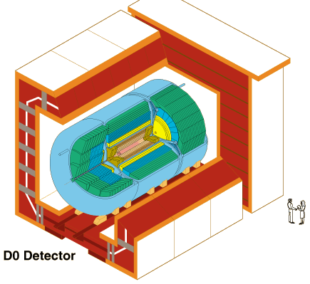

The D0 Detector Facility
|
The Tevatron at Fermilab has two detector complexes referred to as CDF and D0. Both are enormous detector arrays weighing some 5000 tons and standing three stories in height.
|

Image courtesy Fermilab
|
The schematic illustration above shows that the enormous collection of detection hardware is arranged so that the particle beams enter from opposite directions along its central axis. The detectors are arranged around the collision area in to attempt to detect and measure all fragments of the collisions. The logic is somewhat like that for a linear detector array, except that it is wrapped around the beam path to detect particles in any direction.
|
Index
Particle concepts
Search for elementary particles
Reference
Rohlf
Ch. 16

D-zero Facility |